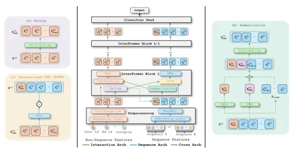

Сегодня разбираем статью InterFormer об архитектуре под задачу CTR-prediction на гетерогенных данных: статичных признаках пользователя/айтема и поведенческих последовательностях.
Авторы выделяют две проблемы существующих подходов:
1. слабое взаимодействие между sequence- и non-sequence-фичами;
2. агрессивное раннее сжатие последовательностей через pooling/summary, из-за чего теряется много информации.
Ключевой вклад — модуль InterFormer, который обрабатывает разные типы признаков отдельно, но на каждом слое обменивает между ними сжатые представления:
Идея в том, чтобы не «схлопывать» все признаки в один вектор слишком рано, а делать «двунаправленный обмен»: sequence помогает non-sequence-части, а non-sequence-контекст помогает sequence-моделированию.
Для задачи CTR используется стандартная бинарная кросс-энтропия.
Из публичных: AmazonElectronics (3M), TaobaoAds (25M), KuaiVideo (137M). Также авторы используют крупный внутренний датасет Meta* на 70B семплов.
На публичных датасетах InterFormer даёт лучшие результаты среди бейзлайнов. На внутреннем датасете Meta авторы показывают +0,15% NE, +24% QPS, а в pilot launch +0,6% uplift по по основным продуктовым метрикам.
Ablation studies подтверждают, что:
Главное достоинство InterFormer — имплементация идеи с двунаправленным взаимодействием между статичными признаками и последовательностями без агрессивного раннего сжатия. Однако архитектура получилась довольно сложной и тяжелой для распараллеливания, приросты на публичных датасетах небольшие, а самые интересные production-результаты получены на закрытых данных Meta.
@RecSysChannel
Разбор подготовил
___
Компания Meta признана экстремистской; её деятельность в России запрещена.
